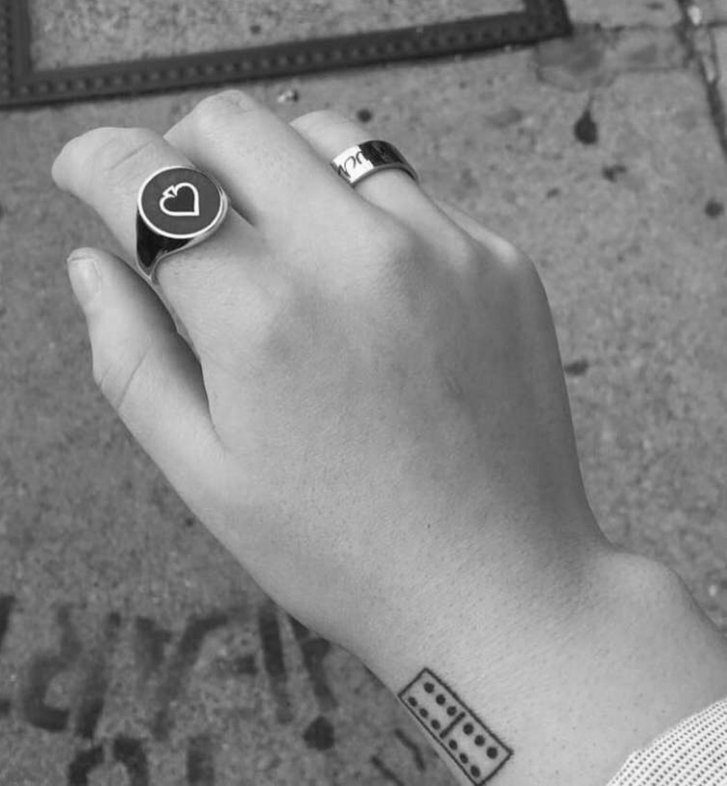

Domino
Domino
TATTOO ONE
Name - Bianca Olsen
Tattoo and placement - Domino on the right wrist.
How old are you? - 19 years old.
How old were you when you got this tattoo? - 18 years old.
How many tattoos do you have in total? - 7
How much did it cost you? - $130
Where did you get it done? - Mohan's Tattoo Inn in the East Village.
How long did it take? - Half an hour.
How impulsive was it? - Considered it for a few months.
Does this tattoo have a meaning behind it? - My Tito Tony died, he taught my sister and I how to play dominos when we visited Puerto Rico. It was the only way we got along as kids.
Is it your own artwork? - No, I let the tattoo artist do it, all dominoes look the same.
BACK BACK BACK BACK BACK BACK BACK BACK
